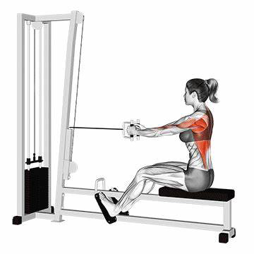

Tel: (21) 91234-5678
contato@halterhabit.com.br

| Alguns dos Nossos Equipamentos | ||
|---|---|---|

|
Cadeira Extensora | |
| O principal movimento articular realizado na cadeira extensora é a extensão de joelho, portanto o quadríceps (vasto lateral, vasto medial, vasto intermédio e reto femoral são os principais músculos trabalhados durante o exercício. fonte] | ||
| Supino Vertical |

|
|
| O supino vertical é um exercício popular e eficaz para desenvolver força, tamanho e definição nos músculos da parte superior do corpo. Ao usar uma máquina de peso guiada, este exercício oferece uma maneira acessível e controlada de direcionar os músculos do peito, ombros e tríceps. [ fonte] | ||
|  | Remada Baixa de Triângulo | |
| A Remada Baixa é um exercício de máquina para costas feito sentado no banco usando a barra triângulo. A Remada trabalha inúmeros músculos como o lombar, latíssimo do dorso, trapézio, deltoide posterior e até mesmo o braquiorradial. [ fonte] | ||